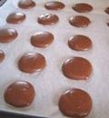
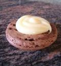

Макарон

Ингридиенты
| Ингридиенты | |||
| Для ганаша с белым шоколадом: | Для макарун: | ||
| Белый шоколад | 100 г | Миндальная мука | 110 г |
| Для ганаша с горьким шоколадом: | Порошок какао (без сахара) | 25 г | |
| Горький шоколад | 80 г | Яичный белок | 120 г |
| Сливки 38% | 50 мл | Сахарный песок мелкий | 50 г |
Способ приготовления
Шаг 1

Как получить миндальную муку:
- Миндальную муку можно приготовить следующим образом:
- В магазине, где продают орехи, можно попросить, чтобы их смололи в муку (они это делают в кофемолке).
- Просеять ее
- Миндаль должен быть очищенным, если вы делаете белые макаруны.
- Если шоколадные макаруны, то можно миндаль брать обычный.
Как делать муку для манарун:
- Нагреть духовку до 150 градусов
- Смешать миндальную муку, сахарную пудру и какао в комбайне, 2 минуты.
- Противень застелить бумагой для выпечки высыпать сухую смесь на лист, просушить в духовке в течение 5 минут
- Просеять через очень мелкое сито
Шаг 2

- Взбить белки, постепенно добавляя сахарный песок, до появления блеска. Добавить в белки сухую смесь и аккуратно, плавными движениями сверху вниз, соединить вместеe
- Яичная смесь будет по консистенции тягучей
Шаг 3

- Приготовить ганаш.
- Сливки подогреть, добавить поломанный на кусочки шоколад.
- Дать остыть и поставить в холодильник (желательно на ночь)
- Размешать до полного растворения
Шаг 4
- Выпекать в разогретой духовке 12 минут, через 6 минут, противень перевернуть на 180°, чтобы печенье равномерно пропеклось.
- Оставить противень на 1час (у меня уже через 30 минут образовалась корочка) на столе для образования корочки.«Это очень важно, если корочка не образуется, то при выпечке образуются трещинки на поверхности макарун. Проверить можно, дотронувшись пальцем до поверхности яичной массы, если не прилипает, то можно ставить в духовку выпекать.»
- Смесь выложить в кондитерский мешок с круглой насадкой и отсадить маленькие, одинаковые по размеру кружочки на противень предварительно покрытый бумагой для выпечки.
Шаг 5

- Достать противень из духовки, снять бумагу вместе с печеньем.
- Побрызгать на печенье холодной водой, после чего бумагу с печеньем вернуть обратно на противень.
Шаг 6
Сборка. На половинку макаруны выдавить из кондитерского мешкв начинку и второй половинкой накрыть. Время готовки 1 ч. Сложность приготовления средняя. Кухня французская.